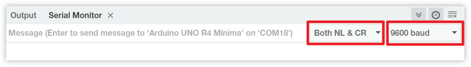
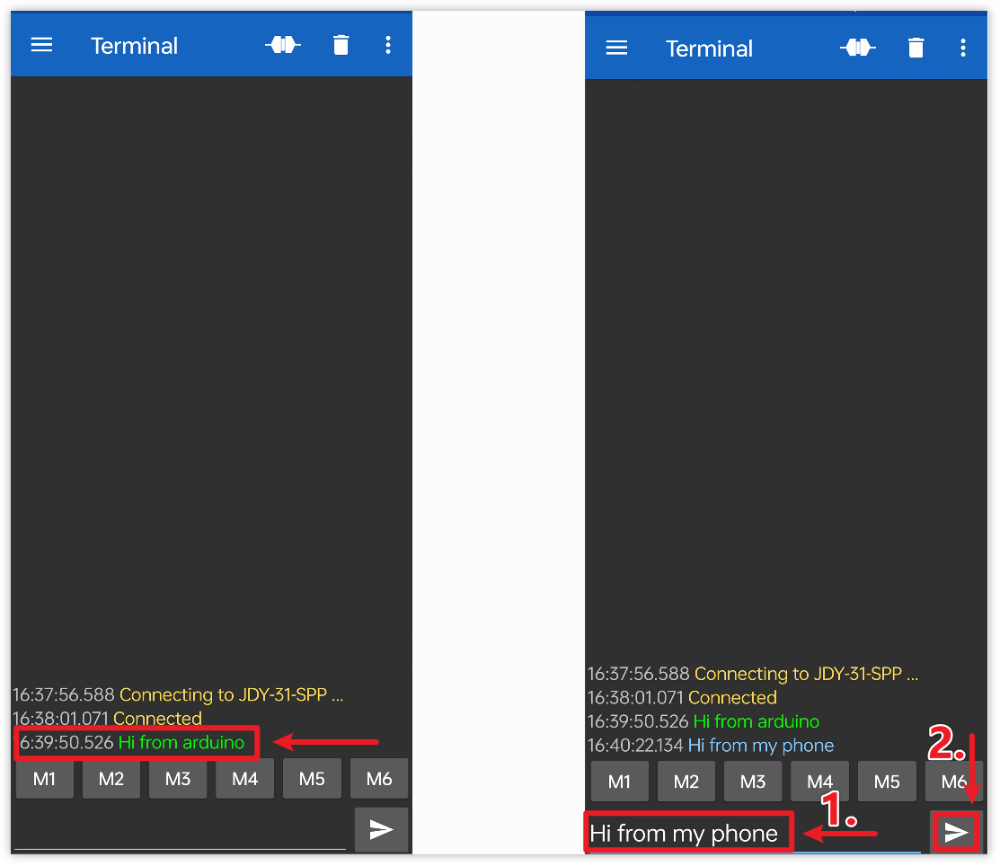

Note
Hello, welcome to the SunFounder Raspberry Pi & Arduino & ESP32 Enthusiasts Community on Facebook! Dive deeper into Raspberry Pi, Arduino, and ESP32 with fellow enthusiasts.
Why Join?
Expert Support: Solve post-sale issues and technical challenges with help from our community and team.
Learn & Share: Exchange tips and tutorials to enhance your skills.
Exclusive Previews: Get early access to new product announcements and sneak peeks.
Special Discounts: Enjoy exclusive discounts on our newest products.
Festive Promotions and Giveaways: Take part in giveaways and holiday promotions.
👉 Ready to explore and create with us? Click [here] and join today!
Get Started with Bluetooth
In this project, we demonstrate how to communicate with a Bluetooth module through Arduino.
Firstly, we need to set up the circuit and use software serial communication. Connect the TX pin of the Bluetooth module to pin 3 of the Uno board, and connect the RX pin of the Bluetooth module to pin 4 of the Uno board.
1. Build the Circuit

2. Upload the code
Open the 00-Bluetooth_start.ino file under the path of ultimate-sensor-kit\code\iot_project_esp01\bluetooth\00-Bluetooth_start, or copy this code into Arduino IDE.
The code establishes a software serial communication using Arduino’s SoftwareSerial library, allowing the Arduino to communicate with the JDY-31 Bluetooth module through its digital pins 3 and 4 (as Rx and Tx). It checks for data transfer between them, forwarding received messages from one to the other at a baud rate of 9600. With this code, you can use the Arduino’s serial monitor to send AT commands to the JDY-31 Bluetooth module and receive its responses.
3. Configuring the Bluetooth module
Click the magnifying glass icon (Serial Monitor) in the upper right corner and set the baud rate to 9600. Then, select both NL & CR from the drop-down option of the New Line dropdown box.

The following are some examples of using AT commands to configure Bluetooth modules: Enter AT+NAME to obtain the name of the Bluetooth device. If you want to modify the Bluetooth name, please add a new name after AT+NAME.
Query the name of a Bluetooth device:
AT+NAME
Set Bluetooth device name:
AT+NAME(following by the new name).+OKmeans the setting was successful. You can sendAT+NAMEagain to verify.
Note
To ensure consistency in the learning experience, it is recommended not to modify the default baud rate of the Bluetooth module and keep it at its default value of 4 (i.e. 9600 baud rate). In relevant courses, we communicate with Bluetooth using a baud rate of 9600.
Set Bluetooth baudrate:
AT+BAUD(followed by the number indicating the baudrate).4 == 9600
5 == 19200
6 == 38400
7 == 57600
8 == 115200
9 == 128000
Please refer to the table below for more AT commands.
Command |
Function |
Default |
|---|---|---|
AT+VERSION |
Version Number |
JDY-31-V1.2 |
AT+RESET |
Soft reset |
|
AT+DISC |
Disconnect (valid when connected) |
|
AT+LADDR |
Query the MAC address of the module |
|
AT+PIN |
Set or query connection password |
1234 |
AT+BAUD |
Set or query baud rate |
9600 |
AT+NAME |
Set or query broadcast name |
JDY-31-SPP |
AT+DEFAULT |
Factory reset |
|
AT+ENLOG |
Serial port status output |
1 |
4. Communicating through Bluetooth debugging tools on mobile phones
We can use an app called “Serial Bluetooth Terminal” to send messages from the Bluetooth module to Arduino, simulating the process of Bluetooth interaction. The Bluetooth module will send received messages to Arduino through serial port, and similarly, Arduino can also send messages to bluetooth module through serial port.
Install Serial Bluetooth Terminal
Go to Google Play to download and install Serial Bluetooth Terminal .
Connect Bluetooth
Initially, turn on Bluetooth on your smartphone.

Navigate to the Bluetooth settings on your smartphone and look for names like JDY-31-SPP.

After clicking it, agree to the Pair request in the pop-up window. If prompted for a pairing code, please enter “1234”.

Communicate with Bluetooth module
Open the Serial Bluetooth Terminal. Connect to “JDY-31-SPP”.

After successful connection, you can see the prompt of successful connection in the serial port monitor.

Input the message in the serial monitor and send it to the Bluetooth module.

After sending, you can see this message in the Serial Bluetooth Terminal APP. Similarly, data can be sent to Arduino via Bluetooth in Serial Bluetooth Terminal APP.

You can see this message from Bluetooth in the serial monitor.